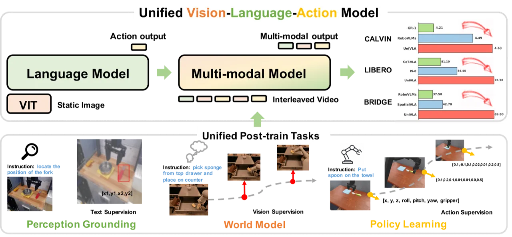
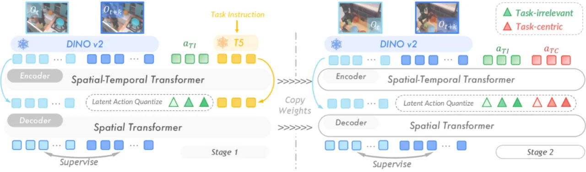
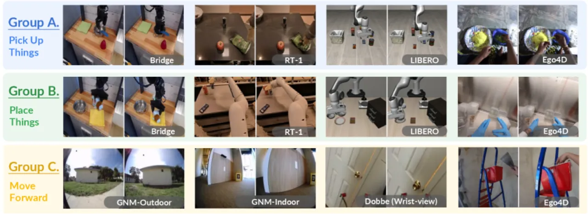
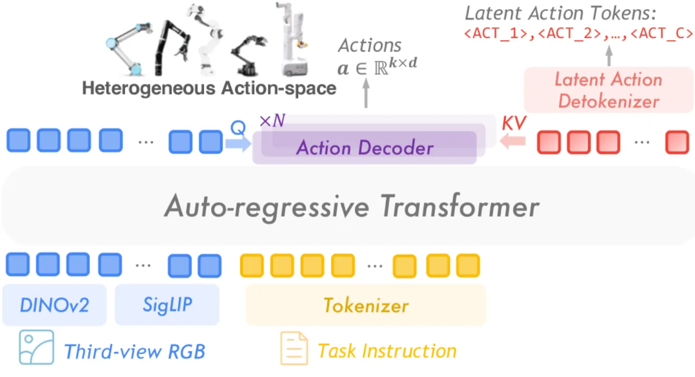
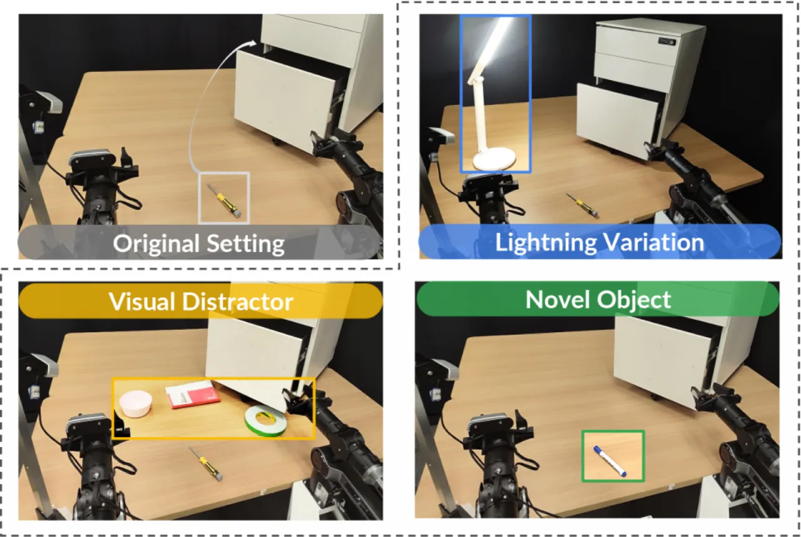
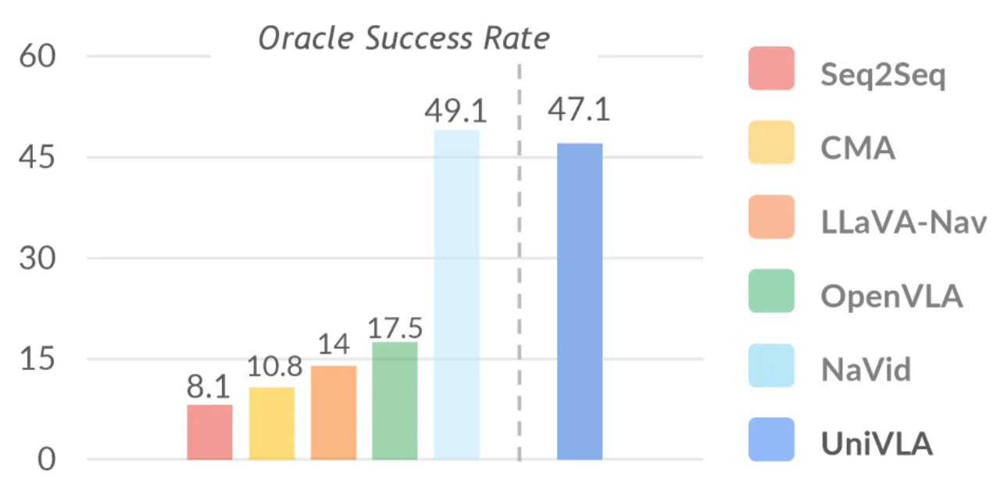
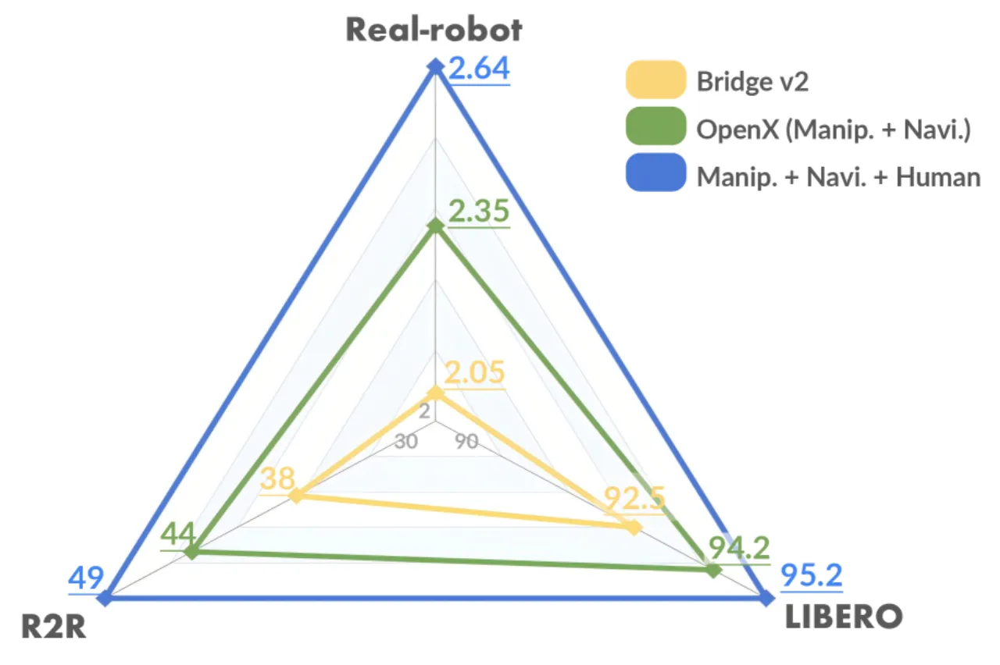

UniVLA 提出一种统一的视觉-语言-动作（VLA）框架：通过 inverse dynamics model 从视频帧对中以无监督方式提取任务中心潜在动作，使机器人策略能够直接利用无动作标注的多体态视频数据预训练，以不足 OpenVLA 1/20 的预训练计算量和 1/10 的下游数据量，在操作与导航任务上均超越现有方法。
现有 VLA 方法严重依赖带动作标注的数据集进行扩展，导致跨体态知识迁移困难、预训练成本高昂。如何像大语言模型学习跨语言共享知识一样，让机器人从无标注视频中学习通用动作表示？
"most existing approaches heavily rely on scaling action-annotated data to enhance their capabilities … We draw inspiration from the fact that large language models learn cross-lingual shared knowledge … and propose UniVLA to derive task-centric action representations from videos."

UniVLA 分三个阶段：① 从视频帧对中学习任务中心潜在动作；② 预训练通用 VLA 策略预测潜在动作 token；③ 用轻量 action decoder 将潜在动作解码为各体态的真实机器人控制量。
以成对视频帧为输入，通过 inverse dynamics model 配合 VQ-VAE 量化，将视觉变化压缩为离散潜在动作 token。关键创新在于利用 DINOv2 特征空间（而非原始像素）进行建模，天然过滤无关视觉变化（非自我运动体、不可预测的摄像头抖动等）。训练分两步进行：Stage 1 用语言指令作为 encoder 与 decoder 的条件输入，解耦任务相关动态；Stage 2 引入"任务无关"分支，强制 encoder 仅捕获任务相关的视觉变化。


策略骨干网络采用 Prismatic-7B VLM，以视觉 embedding 与任务指令 token 为输入，自回归预测离散化的潜在动作 token。这一设计使策略可直接利用所有有视频和语言的数据（含人类示教视频、OpenX 跨体态数据）进行大规模预训练，彻底打破对动作标注的依赖。

部署阶段，为每个目标体态训练一个轻量 action decoder（仅 12.6M 参数），将策略输出的潜在动作 token 解码为该体态的实际控制指令。解码器以视觉观测与历史潜在动作为输入，可独立于主策略高效适配新体态，支持 10Hz 闭环推理（RTX 4090）。
在三类任务上评估：桌面操作（LIBERO benchmark）、真实机器人部署（Piper 7-DoF 机械臂）和视觉语言导航（R2R VLN-CE）。基线包括 OpenVLA、LAPA、MaIL、MDT、Diffusion Policy、Octo 等主流方法。
| 方法 | Spatial | Object | Goal | Long | 平均 |
|---|---|---|---|---|---|
| LAPA | 73.8 | 74.6 | 58.8 | 55.4 | 65.7 |
| Diffusion Policy | 78.3 | 92.5 | 68.3 | 50.5 | 72.4 |
| Octo | 78.9 | 85.7 | 84.6 | 51.1 | 75.1 |
| MDT | 78.5 | 87.5 | 73.5 | 64.8 | 76.1 |
| OpenVLA | 84.7 | 88.4 | 79.2 | 53.7 | 76.5 |
| 74.3 | 90.1 | 81.8 | 78.6 | 83.5 | |
| UniVLA (Human) | 91.2 | 94.2 | 90.2 | 79.4 | 88.7 |
| UniVLA (Bridge) | 95.2 | 95.4 | 91.9 | 87.5 | 92.5 |
| UniVLA (Full) | 96.5 | 96.8 | 95.6 | 92.0 | 95.2 |
UniVLA (Full) 相比 OpenVLA 提升 18.7%，相比 LAPA 提升 29.5%。
| 任务 | Diffusion Policy | OpenVLA | LAPA | UniVLA |
|---|---|---|---|---|
| Store Screwdriver | 80.0 | 60.0 | 66.7 | 93.3 |
| Clean Cutting Board | 73.3 | 20.0 | 33.3 | 80.0 |
| Fold Towel Twice | 53.3 | 6.7 | 13.3 | 46.7 |
| Stack Tower of Hanoi | 6.7 | 13.3 | 26.7 | 86.7 |
| 平均成功率 | 53.3 | 25.0 | 35.0 | 76.7 |
UniVLA 相比 LAPA 平均成功率提升 36.7%，在语义推理要求最高的 Stack Tower of Hanoi 任务上尤为突出（LAPA 26.7% → UniVLA 86.7%）。


以下消融实验揭示了各设计选择的重要性（数据均来自论文 Table III–V）：
| 潜在动作类型 | Spatial | Object | Goal | Long | 平均 |
|---|---|---|---|---|---|
| Genie（全部变化） | 89.8 | 92.8 | 77.2 | 69.6 | 82.3 |
| 任务无关分量 | 68.0 | 90.4 | 67.2 | 0.2 | 56.5 |
| 任务中心（本文） | 91.2 | 94.2 | 90.2 | 79.4 | 88.7 |

论文指出："The fixed granularity of the latent action and the predefined codebook size may not be optimal for all tasks or embodiments."本文主要在单臂操作场景下验证；扩展到双臂或灵巧手系统需要更复杂的动作建模，尚未得到充分探索。
任务中心潜在动作的学习依赖语言指令作为解耦信号，要求指令描述短时程具体动作，而非高层目标。尽管作者指出方法可处理不同粒度的指令，但对极稀疏或极抽象指令的鲁棒性尚待验证。
潜在动作 decoder 实质上是一个 world model，但本文未将其用于规划树搜索或与奖励模型结合做强化学习，留有较大的探索空间。
作者提出未来可将人类示教视频编码为潜在动作序列，用于零样本技能迁移（in-context learning），但该能力在本文中尚未实现。